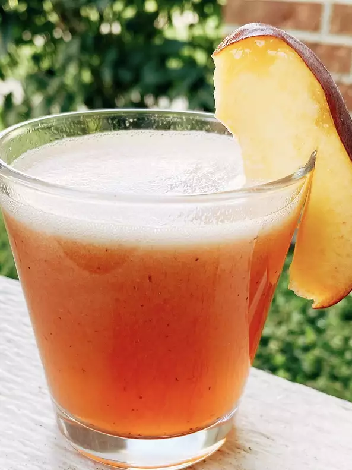

Lemonade

Peach Lemonade
Lemonade takes a trip south and is enhanced by the luscious juiciness of Georgia peaches. Easy enough to fix for a hot day and the blush color would be perfect for a spring brunch.
Ingredients
- 1 cup white sugar
- 7 cups water, divided
- 1 ¼ cups freshly squeezed lemon juice
- 2 fresh peaches, peeled and pitted
- sliced peaches for garnish
- ice as needed
Steps
- Place sugar in a saucepan. Pour in 1 cup water. Turn heat to medium and stir continuously until sugar granules are dissolved. Remove from heat and let cool.
- Pour lemon juice into a pitcher. Pour in remaining 6 cups water.
- Place pitted peaches into a Vitamix® blender. Blend until smooth. Pour peach purée into the pitcher along with the simple syrup (dissolved sugar in saucepan). Stir to combine.
- Adjust to taste. Add garnish such as a slice of peach, ice, and serve.
Return to top
Back to main page